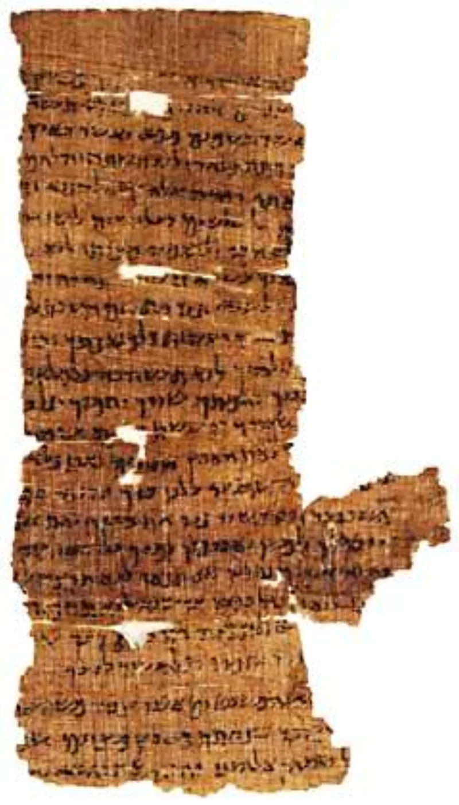

Skeptical scholars grant this themselves. Argue it from their sources, not yours.
Before 1947 the oldest complete Hebrew Bible manuscripts came from around AD 1000. That left a thousand-year gap, and room to argue the text had drifted badly.
Then a shepherd found jars in a cave near the Dead Sea.
The Great Isaiah Scroll holds the whole book. Radiocarbon and handwriting date it to roughly 125 BC.
That is a thousand years older than what we had. Set beside the later Masoretic text, it is substantially the same.
Nearly all the differences are spelling and slips. A handful touch meaning.
None touch doctrine.
Qumran also shows real variety in some books. Jeremiah exists in a short and a long edition.
Samuel differs. So never say "letter-perfect." Say this instead.
Copying was astonishingly careful, and where it was not, we can see it.
The scrolls prove faithful copying from about 125 BC onward. They say nothing about the centuries before that, and that is where critical scholars place the heavy editing.
Isaiah itself is widely held to gather material from the 8th to the 6th centuries BC, and the scrolls cannot settle that. The variety at Qumran also cuts against a tidy one-text story.
The community shelved rival editions side by side. And copying a text well says nothing about whether it is true.
A perfectly copied oracle is still an oracle.
Granted. The date of the scroll and its closeness to the later text are published by the Israel Museum and accepted by every textual critic, skeptics included.
Emanuel Tov's standard handbook lays out both halves. Claim exactly what it proves.
A thousand years of proven care, and hard physical proof that Isaiah 53 is older than Jesus.
"They ran the experiment for us. A copy from 125 BC against a copy from AD 1000.
Go and look."

The scrolls prove careful copying from 125 BC on, and nothing about the years before.
The careful skeptical framing is this. The scrolls prove faithful copying from about 125 BC onward. They say nothing about the centuries between the writing of a book and Qumran, and that is where critical scholars place the heavy editing. Isaiah itself is widely held to gather material from the eighth through the sixth centuries BC, and the scrolls cannot settle that.
The variety at Qumran also cuts against a simple one-text story. The community shelved rival editions of Jeremiah and Samuel side by side. That suggests the settled text was still in motion.
And copying a text well has nothing to do with whether the text is true. A perfectly copied oracle is still just an oracle.
Conceded — claim the copying record, and raise the Jeremiah caveat yourself first.
Conceded. The date of 1QIsaa and its closeness to the Masoretic text are uncontested facts. The Israel Museum published them, and every textual critic accepts them, skeptics included. Emanuel Tov's standard handbook sets out both halves.
Claim exactly what it proves. A thousand years of proven care in copying, plus hard physical proof that Isaiah 53 is older than Jesus, which matters for the prophecy entries. Raise the Jeremiah and Samuel caveat yourself, before the skeptic does.